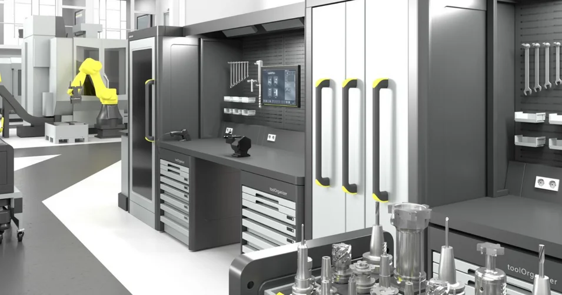

Управление инструментом: ваши преимущества
Узнайте, как управление инструментом от ZOLLER сразу повышает вашу производительность. С данными инструмента процессы идут быстрее и надёжнее – включая защиту станков от столкновений.
Подробнее
Со Smart Cabinets решаете вы: сделайте предварительный выбор и свяжитесь с нашим отделом продаж ZOLLER – мы с удовольствием проконсультируем вас и сконфигурируем нужную модель.
Пять шагов к инструментальному шкафу: полезная высота, управление, исполнение, ящики и разделение. Предпросмотр сразу показывает шкаф, спецификация называет артикулы, а одним щелчком ваш предварительный выбор уходит нашему отделу продаж.
| Кол-во | Наименование | Артикул |
|---|
Ваш предварительный выбор – обязательную конфигурацию и предложение подготовит отдел продаж ZOLLER. Артикулы по буклету »toolOrganizer« (версия 13, 08/2024), возможны технические изменения.
| 600 мм, 900 мм, 1225 мм |
| »toolOrganizer 600« – В x Ш x Г: 875 x 800 x 790 мм |
| »toolOrganizer 900« – В x Ш x Г: 1175 x 800 x 790 мм |
| »toolOrganizer 1225« – В x Ш x Г: 1500 x 800 x 790 мм |
| Макс. 80 кг на ящик, опционально макс. 160 кг (при высоте ящика от 150 мм) |
| Механический центральный замок |
| Электронная система блокировки ящиков |
| Электронная блокировка отдельных ячеек »smartCompartment« |
| Электроника стола |
| Отдельный пульт управления »cockpit« с ПО управления »quickPick« |
| TMS Tool Management Solutions – рабочее место |
| Приборы ZOLLER для настройки и измерения – с программным модулем Smart Cabinets |
| 75 мм, 100 мм, 125 мм, 150 мм, 175 мм, 200 мм, 250 мм, 300 мм |
| 4 ячейки, 8 ячеек, 12 ячеек, 16 ячеек, 24 ячейки, 48 ячеек |

Узнайте, как управление инструментом от ZOLLER сразу повышает вашу производительность. С данными инструмента процессы идут быстрее и надёжнее – включая защиту станков от столкновений.
Индивидуальное обсуждение ваших целей и наших идей по их достижению. Онлайн-консультация ZOLLER прямо из Smart Factory. Запишитесь на встречу прямо сейчас.